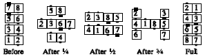

From columns: The #1 dancer in each column Trail Off and walk forward, followed by the other dancers in the column. Finishes back in columns close together (requires an adjustment at the end). If the caller gives a fraction, then one person does the Trail Off for each 1/4 in the fraction, and the resulting columns balance themselves so that they are mutually centered. Thus, for Cross Invert the Column 3/4, the first 3 dancers in each column move across and around the other column, finishing in an "H":

© Copyright 1983, 1986-1988, 1995-2011 Bill Davis, John Sybalsky and CALLERLAB Inc., The International Association of Square Dance Callers. Permission to reprint, republish, and create derivative works without royalty is hereby granted, provided this notice appears. Publication on the Internet of derivative works without royalty is hereby granted provided this notice appears. Permission to quote parts or all of this document without royalty is hereby granted, provided this notice is included. Information contained herein shall not be changed nor revised in any derivation or publication.